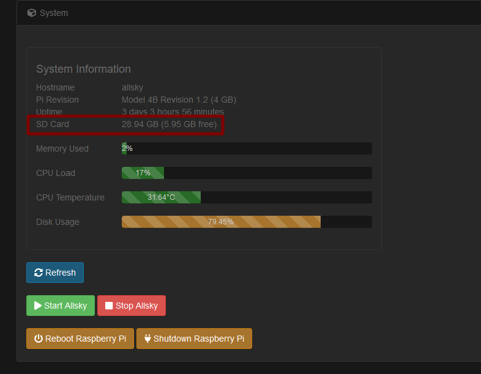

Problems with your Raspberry Pi are not an issue with the AllSky software, but we're providing this page as a service to Allsky users.
My Pi isn't using all its disk space
If you have a large SD card like 64 GB but the WebUI's System page shows significantly less, you need to resize the card. For example you see this:  To fix this, resize your filesystem:
sudo resize2fs /dev/sda2
It may ask you to run an fsck command then run the resize again.
If so, follow its instructions - you'll need to use sudo.
After the resize, you should have all your space reporting correctly.
Pi 3B+ doesn't run the latest AllSky Software
If your Pi either hangs while booting with a camera connected or it gives ASI_ERROR_TIMEOUT messages when connecting the camera after booting, read on.
If you are running the much older "Stretch" version of Linux, upgrade the firmware:
sudo apt-get install rpi-update # on Raspbian sudo rpi-update
Lenses
Lenses need to be matched to your camera and your environment. If you're in an urban canyon, maybe you don't need a 180° lens. If you have light interference near the horizon you can create an artificial horizon, with a piece of black PVC pipe for example. If you're unsure of the field of view you can use a tool like Bintel to calculate the field of view on the sensor, or Stellarium to simulate the field of view.